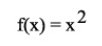
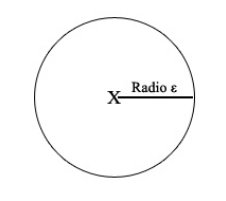
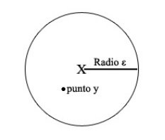
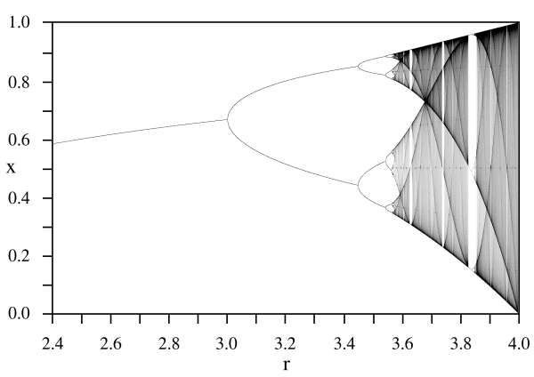

|
"It means that two states which differ imperceptibly, could evolve into two considerably different states. Therefore, if there is any error when measuring the current state -and such errors appear to be unavoidable in any real system-, it could be impossible to get a reasonable prediction on a future state in some specific moment."
[Edward Lorenz]
(revised article also published in Silverstar 3-PG24, though with awkward formatting and without images)
For the greeks, who created the term "Χάος", Chaos was the raw material from which our world was created. The word came from the indoeuropean root "ghn", and wasn't still confused with the term "disorder".
That was as well the origin of the germanic Ginnungagap, the "apparent emptiness" that consisted on a huge and windy nothingness which preceded the "upper worlds" in their cosmology. It was the place where the intense cold from the northern Niflheim and the unbearable heat from southern Muspelheim met.
In greek, "Χάος" is precisely the "emptiness which takes up a hole". In their creation myths, such chaos was composed by the four elements: air, fire, water and earth. It was the origin of a structured world where the first deities arose.
According to Hesiod, Gea was the first thing that arose from Chaos. For the pelasgians (one of the most ancient people from Greece) it was Eurynome, daughter of the Ocean and goddess of everything, who arose from Chaos and "structured" it to create Cosmos. In the orphic mysteries, Chaos was also considered (both mythically and philosophically) the origin of things.
It is the roman poet Publius Ovidius Naso who is to blame for the corruption of the term that made it equivalent to absolute disorder. In the second stage of his cosmogony in his "Metamorphoses", as he spoke on Chaos, Ovid described it as a confused mixture of matter which would later be divided in four elements and four regions: that is to say, chaos was considered by Ovid as the opposite of cosmic order.
Nowadays, this concept has become relevant again. Chaos mathematicians successfully model important mechanisms which explain a lot of natural phenomena. But furthermore, Chaos as a concept has infected popular culture. We talk about butterflies that cause earthquakes by the mere flapping of their wings, and movies such like Darren Aronofsky's "PI" try (quite successfully, by the way) to depict a world with characteristics that belong to a "chaotic system". Postmodern cultural branches (and ideas such like discordianism) consider reality as a formless substance everyone could (re)structure, manifesting its order and disorder as two complementary ying-yang qualities that are always present. Fascinated by the beauty we find in fractal images, a debate arises: are they Art? Perception and reality hacking seem to find further support, and an important branch from modern magick called "chaos magick" arises.
But the popular idea on chaos is still infected -and many times even in those who use it, like chaos magicians- by Ovid's cosmogony which mixed up Chaos and disorder.
Now,... what is the origin on the current Chaos revival? What are Chaos Mathematicians about? Which world are they describing?
In this article, I will try to divulge the most important points from Chaos theory. All the material can be found in advanced science books, but it is my will to simplify it enough so that it can be understood without a strong scientific background. Still, I have no choice, and I will have to use some formulas (after all, we're talking about mathematics); but I'll try my best to make them easy to understand, helping you to decipher the hidden meanings behind the symbols.
Those dreaded maths
If we are to mathematically describe chaos, we'll have to start by laying its foundations. First of all, we have to define something we call a "dynamic system". Chaos is a property that belongs to some special "dynamic systems".
We will have two ingredients. Consider we have a "metric space" we call "D", which is the infinite space wherein mathematical events happen. Consider we also have an "application" we call "f(x)" in it. An application (a function) is a mechanism which we use to move a point inside the metric space "D": "x" is the initial place where the point is, and so f(x) is an operation that affects x and results in another point. For instance, we could consider an application such like " f(x) = 2*x ", which means that "the point defined by f(x) is that which corresponds to the double of x". When we assign a value to x, we can solve the equation and obtain the value that belongs to f(x), which is double x this time. (The symbols "f" and "D" do not mean anything by themselves, and I could have chosen any other symbols)
I said that the "metric space" is where the application works. For instance, the set of all positive numbers would make a metric space, both positive and negative numbers (called integers) would make another space, etcetera. If we use the integer metric space, that means we can only use non-fractionary numbers as values for x and f(x). But generally, we will use the metric space that is composed by the "real numbers", which has almost no restrictions, and contains fractionary numbers.
Another "f(x)" application example would be:
 (1)
This means that we will square the value we apply it to. So, if we have a point that is x=3 in the metric space D and we apply it f(x) = x * x = 3 * 3, the result will be 9 in the metric space D. Maybe adding "in the metric space D" might look too formal, but it is a nice thing not to have loose ends here.
Now, see how f(x) values change when we assign some values to x. When we repeatedly use a result ( f(x) ) as the next value x to which we will apply f(x), we will call them "iterations".
 (2) (2)
Back on topic. In dynamic systems theory, what we study is the behaviour of the "f(x)" iterations, depending on the initial value. We specifically study something called "orbits", which are the results from applying f(x) a lot of times to these initial values and the subsequent results. That is to say, we apply f, then we apply f again to the result, and so on, until we figure out where are these iterations leading us. Where will it go when we apply it ten times, f(f(f(f(f(f(f(f(f(f(x)))))))))) ? What if we apply infinite "f"s, instead of just ten?
For instance, the orbit that belongs to the initial value x=2 in the application we described in picture (1), will evolve as follows: f(2) = 4, f(4) = 16, f(16) = 256, etcetera, so the number is bigger on each iteration. When we apply infinite "f"s, the resulting value will be infinitely big. In fact, for the application in picture (1) there are three possible orbits, which depend on the initial 'x' value:
* If x is bigger than 1 or smaller than -1, the orbit diverges: the final result is infinite.
* If x is smaller than 1 or bigger than -1, it converges: the final result is 0.
* If x is equal to 1, it will converge: the final result after applying f infinite times, is 1.
These orbits have some other properties, but we can stop here. We have enough material to go on and describe, what is Chaos about?
Now, a dynamic system (defined by a metric space D and an application f) needs to fulfill three requirements in order to be considered chaotic. I will formulate and explain these three characteristics that define chaotic systems, which will show what Chaos is really about:
Condition 1: A chaotic system must be sensible to its initial conditions
First of all, let me write this mathematically,... I will decipher it for you later. Don't panic!
So,... a dynamic system is chaotic if:
There is a number δ > 0 so that for every x that belongs to X and every ε > 0, y exists so that it belongs to X with a distance d(x,y) < ε, and a value n that belongs to N (natural numbers) exists so that d(fn(x),fn(y)) > δ
Ok, what was that?. Basically, here you have it: if a butterfly flaps its wings in Beijing, those poor bastards in New York will have to suffer yet another hurricane. They will, if we consider reality as a chaotic system.
Let's decipher this.
The mathematical expression begins by naming two objects, when it states that "for every x and every ε ... ". This "x" is a point, and "ε" is a distance from that point to some other place. In a less abstract language, if "x" was New York and "ε" was 10, we could be talking about a distance of 10 kilometres from New York. If we draw the "x" and every point that is at a distance "ε", we will have a circle centered in x and with radius ε:

Now, for every value that x and ε can adopt, that is to say for every circle centered anywhere with whatever radius we assign it, there will be at least another point (which we name "y") inside of the circle that meets some conditions. (That point called "y" can be anywhere as long as it is less than 10 kilometres from New York)

The special thing about this "y" point is that when we find out the orbit of "x" and "y" (which means we apply function f to "x" and "y" infinitely), there will be an iteration in which the distance between "x" and "y" must be greater than a fixed amount which we will call "δ".
It is difficult here to make up any example with New York. But let's choose something more realistic. Point "x" is a drop of water in a cloud, and "y" is a drop of water quite close to "x". In fact the distance that separates "x" from "y" lesser than "ε". Well, what the condition means is that when it rains, both drops of water are going to be separated by at least a distance of "δ".
We call that distance "δ" the "sensitivity constant", because the bigger "δ" is, the more sensible the system is to its initial conditions, which is the same as saying, "how good we are at determining such initial conditions, if we want to predict how will that system behave". It is important to understand that this happens to every point in the system, as long as it is a dynamic system which fulfills the chaotic condition on being sensible to initial conditions.
What does this mean?. Well, when we draw the circle, we have to consider that the condition works for EVERY distance "ε". That is to say, "ε" can be 10 centimeters, but "ε" can be 0'00000000001 centimetres too. However, "δ" is fixed. If "δ" is 100 centimeters, it doesn't matter if the two drops of water are initially separated just by a centimeter, even by just a milimeter: when it rains they a time will come in which they are at least 100 centimeters apart.
What does this imply?. Let's summarize. We were applying function "f" again and again over two points "x" and "y" which were quite close (separated by a distance lesser than "ε"). If this "f" is chaotic, we will always reach a point in which they are separated by a distance which is at least "δ". This effect is called "sensible to initial conditions", because it means that even the slightest error when measuring the initial conditions of the system can produce a remarkable error in our predictions when we iterate function f: this error will be at least as big as "δ".
This feature is so significant that in chaotic systems you can analyze a "typical" behaviour of the system, but you can never be sure about a specific one. Since we can make "ε" as small as we want, it doesn't matter how accurate our instruments are: they can never be exact enough to predict what will happen. The system is always unpredictable in the end. This is the butterfly which creates the hurricanes.
Condition 2. A chaotic system must be topologically transitive.
Lets start with another horrible mathematical definition, which I will subsequently decipher. This one is easier. Seriously. If you understood the previous one, the rest will be easy:
- The metric space D with an application f, has the characteristic of being "topologically transitive" if there is a value "k" for every two open subsets U and V from space D, so that there is an intersection between the subsets V and f(U) (in its k iteration).
This means that when you iterate (remember?) the function "f" a specific number of times ("k" times: "k" is the letter we use to represent that number of times), you can travel anywhere from wherever you are.
"Open subset" is the way we formally describe a "place" you can visit (we call it "interval" as well). This "place" is always composed of several points, which are enclosed by some limits. An "open subset" is represented as (value1, value2): everything bigger than value1 and smaller than value2 is inside the "open subset". For example, an "open subset" defined as (1,2) would contain values such as 1.2, 1.5, 1.2357245, etc.
Now, imagine we have two open subsets. One of them is U, which is everything between "1" and "2". So, we define U = (1,2). The other one is V, which represents everything you can find between "10" and "11". So, we define it as V = (10, 11). If the system meets this condition about being "topologically transitive", when you apply f to every number that belongs to U (between "1" and "2") repeatedly, there will be an iteration in which the result of f is some number between 10 and 11. Always.
If we make "x" to be 1.5 and a made up "f", we would go on iterating and it might look like: f(1'5) = 4,, f(4) = 8,, f(8) = 10'5,... there you have it! If this happened, the "k" in our definition would be "3". In the fourth step, f(10'5) could be anything, like, 23. It doesn't matter; the important thing is that in chaotic systems, you can always visit any interval of points from any other interval.
If this condition on being "topologically transitive" is met, it will also happen in more extreme conditions,... and it will always happen (well, that is the reason we use letters, so we can refer to every case). If we define U = (1'0000001, 1'0000002) and we consider a point "x" inside the interval defined by U, when we iterate through f we will always reach a point when the result belongs to V = (10'1111111, 10'1111112). We will also reach a point in which the result belongs to V = (5000'1111111, 5000'1111112). And that will happen for every open subset V we could think about.
Since this feature exists inevery open subset, we call it "irreducibility". This means we cannot just isolate and study one part of the system, as if it was somehow separated from the everything: it isn't. Everything is related to everything. Smart readers will deduce yet another consequence from this condition: everything is possible… however, it may take some time to reach there.
3. A chaotic system must have dense periodical points
This is the last condition, and here is when it all goes seriously bizarre. The two conditions I've already described would lead us to the typical popular concept that is usually confused with total disorder, and summarizes your clique chaos magician babble: everything is possible/permitted, you can reach whatever you want, and your routes could be altered by butterfly wings, since everything is somehow related to everything.
Chaos culture usually stops here. It shamefully develops into a radical relativization that leaves it postmodern and hollow.
But Chaos has more to offer.
Its third characteristic, the last condition a system has to meet to be considered chaotic, is the existence of a deeper structuring mechanism. It isn't "order". It isn't "disorder". It is something different. It is something we could think about as some sort of global "pattern" on the way chaos behaves, some sort of cyclical personality; a pattern which underlies everything, a pattern which is inherent to Chaos.
But before we finally reach there, I have to introduce you to yet another little mathematical concept, which is called "periodical orbit". Being periodical is something that can happen to orbits, and it means that the values we obtain when applying f several times, oscillate between two or more points.
For example, if we define "f(x) = -x", each time we apply f(x) we will oscillate between two points, positive and negative. If the initial point was 3, our f(x) iterations would work like: 3, -3, 3, -3, 3, -3,...
We also use another concept, which is called "period". How many iterations do we have to make until we reach that value again?. In the previous case, "f(x) = -x", the period is 2, since we have to iterate two times from a specific value if we want to return to that value: if we apply f(x) two times, the result is the initial x.
But a periodical orbit can have a period bigger than 2! So, if we had a periodical orbit with a period of 5, we would reach the same point whenever we apply f(x) five times to a value. Iterations in f(x) could look like: {-1, 3, 1, 4, 0, -1, 3, 1, 4, 0, -1, 3,...}
After this introduction, lets reveal the condition in its mathematical form. Now it is quite simple:
* Periodical points in a system are "dense" if there is (at least) one periodical point in every open subset U.
What does this mean? If we return to the second condition, an "open subset" was a group of points which were together inside an interval. For instance, if U=(1,2), we would be speaking about every point between 1 and 2.
Now what this condition means, is that regardless which open subset we take, be it U=(1,2) or be it (0.0001, 0.0002) or whatever, we are going to have a periodical point inside. What this means is quite interesting: even though Chaos has the property of unpredictability (sensibility to initial conditions) and even though it has the property of irreducibility ("topologically transitive"), it has a property which introduces a deep regularity.
This regularity means that Chaos is crossed by patterns everywhere. There is something, a "deeper" structuring mechanism which is part of the basic mechanisms of Chaos, that goes beyond "order".
Consider the implications on combining this condition with the unpredictable nature of Chaos, and its endless possibilities. If you were to analyze a single drop of water from this immense Chaos ocean, you could infer:
- First condition: That you cannot predict where it will end.
- Second condition: That it is related to every other drop of water in a way that makes it able to end up in the most remote part of this infinite ocean. And you can be sure it will reach it, given enough time.
- Third condition: That the ocean is composed of patterns that permeate every single drop of water, and structure the way they behave at a deeper level than anything we could classify as "order" or "disorder".
Chaotic systems: where to find them?
Most of the physical systems we find in the real world behave in a way which can be modeled by chaotic systems. It is specially useful to deal with the "noise", that is to say, the imprecision from classical physics equations. However, it is not limited to physics: chemistry and biology are some other fields in which it is used, and its applications have become so important that some scientifics consider that understanding Chaos is as important as understanding relativity and quantum mechanics.
Some important fields in which chaos mathematics are applied are:
* Flow physics, quantum mechanics, oscillatory mechanical and electrical phenomena (such like the beating of a heart, or the electrical activity in the brain)
* Weather forecasting.
* Economic behaviour, stock exchange analysis.
* Ecosystem analysis, population fluctuation.
* Models on the Hyperion orbit around Saturn, and other satellites in our Solar System. Scientists think that it could also be applied to the behaviour of the asteroid belt, and possibly to the orbit of Pluto.
* The throwing of coins.
* The way a pinball behaves.
* Leafs falling from trees.
Some hardcore adherents of this theory, argument that reality itself can be described as a chaotic system.
Reality is unpredictable, and it is impossible to measure its variables. We can create "correct" models on how it behaves, but we can't simulate its current state.
It is irreducible: studying one of its parts is never enough without studying all the others. Any part depends on the everything, and influences it. Everything is related.
And still, in its complex interdependence and unpredictability, Reality features a deeper regularity, a subtle structure which permeates every atom, a pattern which is barely visible until we tune in with Her. It is all about those "dense periodical points". Different worlds open up inside the same world, beyond those glitches humans usually try to ignore by covering them with the illusion of order, forgetting that nothing is true and everything is permitted, and that there is a deeper organization, a deeper pattern, just one step beyond order and disorder.

|
 RSS
RSS